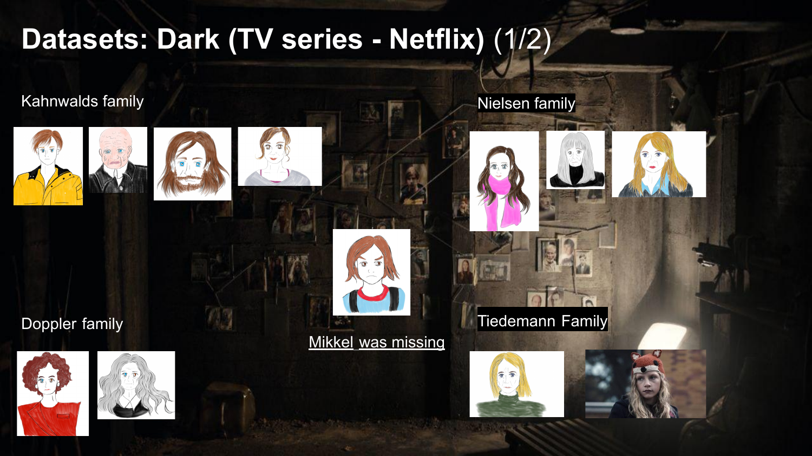
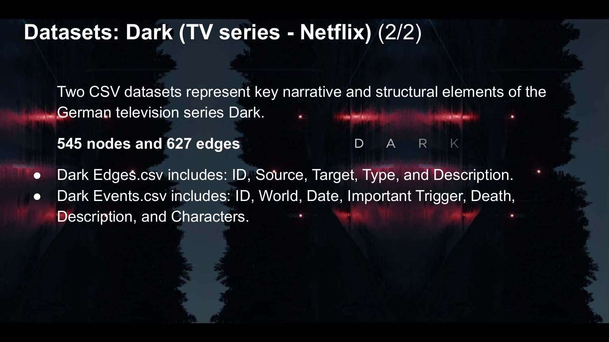

The project utilizes two datasets provided from the Graph Drawing Contest. These datasets represent key narrative and structural elements of the German television series Dark. ark is a science fiction thriller that explores themes of time travel, fate, and family secrets. One dataset contains all of the edges (relationships), the second dataset contains all events, both are in CSV format.
To make the visualization process smoother and the narrative more understandable, I cleaned and organized these datasets with different tools before drawing a graph with D3.js. This would make it easier to analyze the story logic and visually communicate it in the graph.